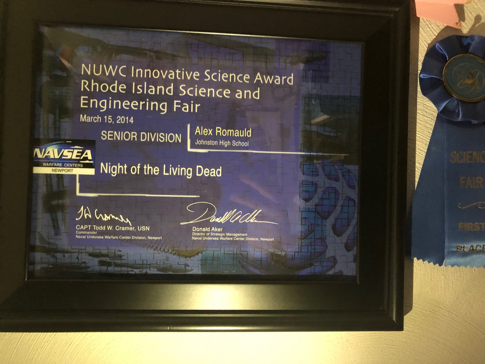

A multiplayer zombie shooter. I wrote this in junior year high school in C#, XNA. This is still available on game jolt.
Players needed to survive endless waves of zombies. They can set and activate traps, spend points, use abilities, and place entities in the world that attack zombies or assist allies.
The zombies needed to be able to path from the dirt-holes they crawl out of, to wherever the player is. Each tile in the world is treated as a node linked to its neighboring tiles. An A* search is performed until the zombie can freely move towards the player without bumping into anything. An additional constraint is that certain areas are unreachable by the player until those areas are unlocked. To account for this, each time a door is opened or glass gets broken, the dirt holes perform a search to the player to see if they should activate.
The game can be played with up to four players in split-screen mode. Each zombie finds a path to the nearest alive player (euclidean distance). If a zombie happens to catch line of sight with a closer player, it will begin to chase them instead.
The game shipped with an editor for players to make and share levels. Every level in the game was built using this editor. Tools are valuable!
Polishing the user-experience of building levels was important. I built out custom graphical interfaces and attempted to keep the process as streamlined as possible. Adjusting prices, spawns, and placements is easy, and users never have to mess with the pathing system.
However, having to tile an entire grass field by hand or place wood throughout an entire building was not only an annoyance for me, but it’s not something you should be asking another user to do. For this scenario I implemented an optional flood fill, where right clicking will replace all neighboring tiles of the same type with the selected tile.
The game was submitted to the high school science and engineering fair in junior year (2014) and won first place at states and received an award from the Navy.